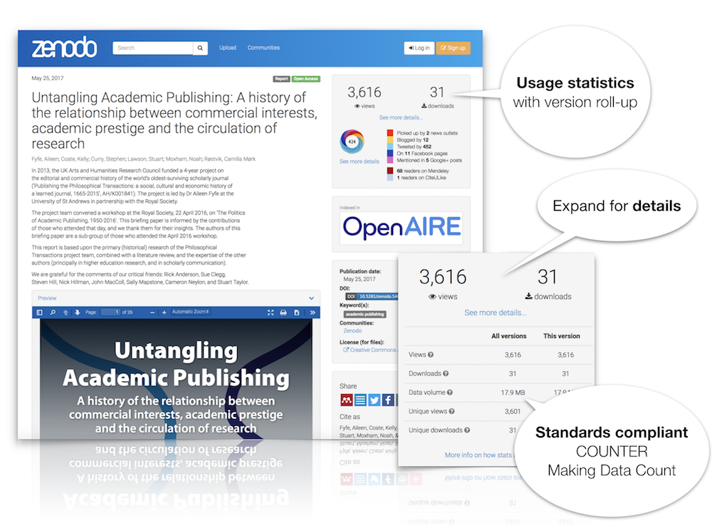
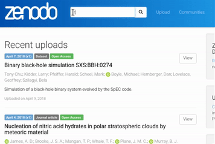

Usage statistics launched!
by
 Alex Ioannidis
on July 18, 2018
Alex Ioannidis
on July 18, 2018
We are happy to announce the launch of usage statistics on Zenodo. From today, you will find the number of views and downloads on record pages, and you can sort search results by most viewed. By default we roll-up usage statistics for all versions of a record. However, it is also possible to see detailed usage statistics for the specific version of a record.
Privacy and standards compliant
We strongly believe in user’s right to privacy, thus we have spend a lot of time to design our system to ensure all tracking is completely anonymized. Our usage statistics is further tracked according to industry standards such as the COUNTER Code of Practice as well as the Code of Practice for Research Data Usage Metrics and thus allows you to compare metrics from Zenodo with other compliant repositories. You can read much more about this, and exactly how and what we track in our FAQ.
The launch today, also only marks the beginning. We will later also be adding usage statistics e.g for your communities, so stay tuned!
If you have any questions or feedback (positive and negative) don’t hesitate to get in touch with us.

Zenodo and General Data Protection Regulation (GDPR)
by
 Lars Holm Nielsen
on May 25, 2018
Lars Holm Nielsen
on May 25, 2018
The General Data Protection Regulation (GDPR) takes effect in Europe on May 25, 2018. The GDPR provides a legal framework for the collection and processing personal information for people in the European Union (EU). The goal is to provide individuals with more control over their personal data.
Zenodo is hosted at CERN, which is an Inter-Governmental Organization (IGO), with its seat in Switzerland. Despite the fact that this means CERN has a special status, we are striving for the same high standards of data protection afforded by GDPR. In fact the GPDR has provisions covering data transfer to/from IGOs and the concept of "adequate protection", i.e. qualified as equivalent. This is what we will offer in Zenodo.
CERN takes seriously the privacy and protection of personal information, and have appointed a Data Protection Officer and, as mentioned above, are working on policies to ensure CERN is compatible with GDPR.
Specifically on Zenodo, we are taking the following actions:
- Review and update our Privacy Policy to provide specific information about what data we collect, how we use it and when we delete it.
- Assess our collecting of personal information.
- Evaluate and ensure that any third-party tools and services are GDPR compatible.
If you wish to review the personally identifiable information about you maintained by Zenodo, or would like your information removed from our records, you may contact us anytime.
More information:
New help guide: Advanced search
by
 Lars Holm Nielsen
on April 10, 2018
Lars Holm Nielsen
on April 10, 2018
Visit the new search guide on https://help.zenodo.org/guides/search/.
Users mostly search on Zenodo using only keywords, similarly to how they would search for something on Google or any other other search engine. Keywords are, however, not always enough if you're looking for something specific. Therefore today, we have launched a search help guide, explaining in detail how you can make use of Zenodo's advanced search features.
The guide explains basic concepts of simple field searches, e.g., searching only within the title field, as well as advanced concepts such as range searches, e.g., searching for publications dated between 2010 and 2011. The guide also includes a full reference of all available fields you can search on, so you can construct the exact search query you need.

Under the hood our search engine is powered by Elasticsearch - the most powerful open source search engine available on the market today.